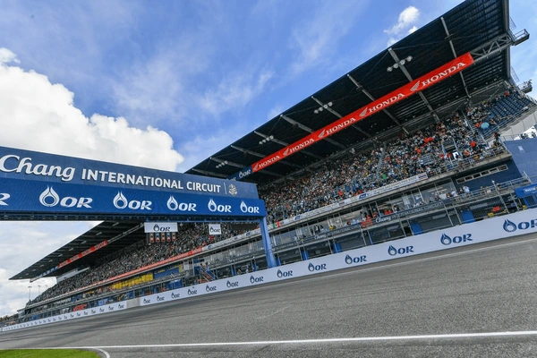
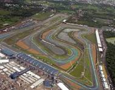

Datos principales
| Campo | Valor |
|---|---|
| Nombre | Chang International Circuit |
| Longitud (m) | 4554 |
| Anchura (m) | 12 |
| Fecha | 2025-03-02 |
| Hora | 15:00:00 |
| Vueltas | 26 |
| Localidad | Buriram |
| País | Tailandia |
| Patrocinador | ThaiBev |
| Vencedor | Marc Márquez |
Bibliografía y enlaces
Clasificados
- 1º — Marc Márquez (25 pts)
- 2º — Alex Márquez (20 pts)
- 3º — Francesco Bagnaia (16 pts)
Fotos

